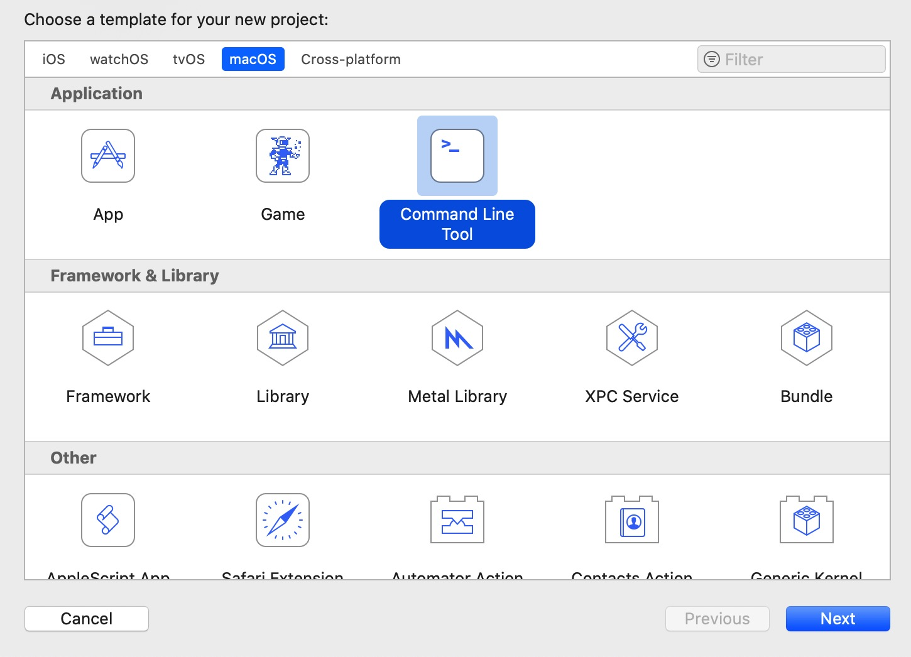
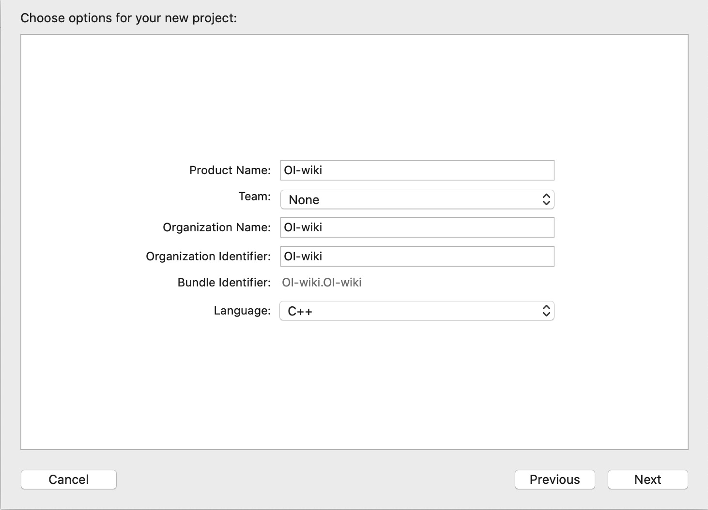
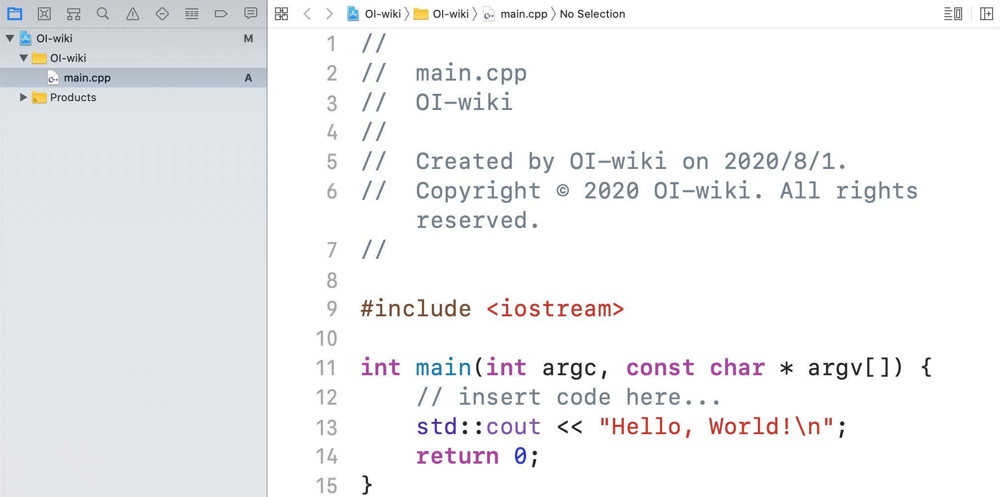
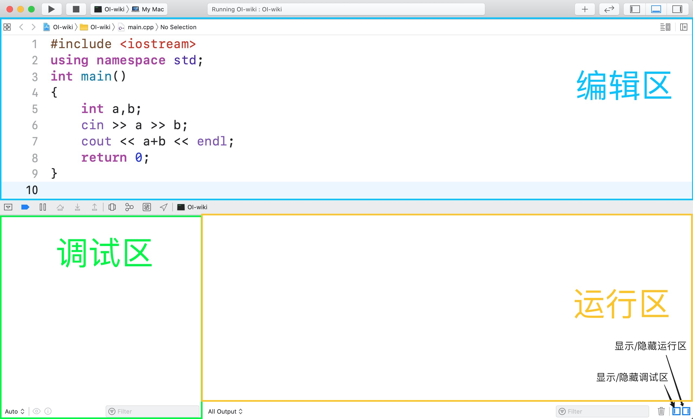
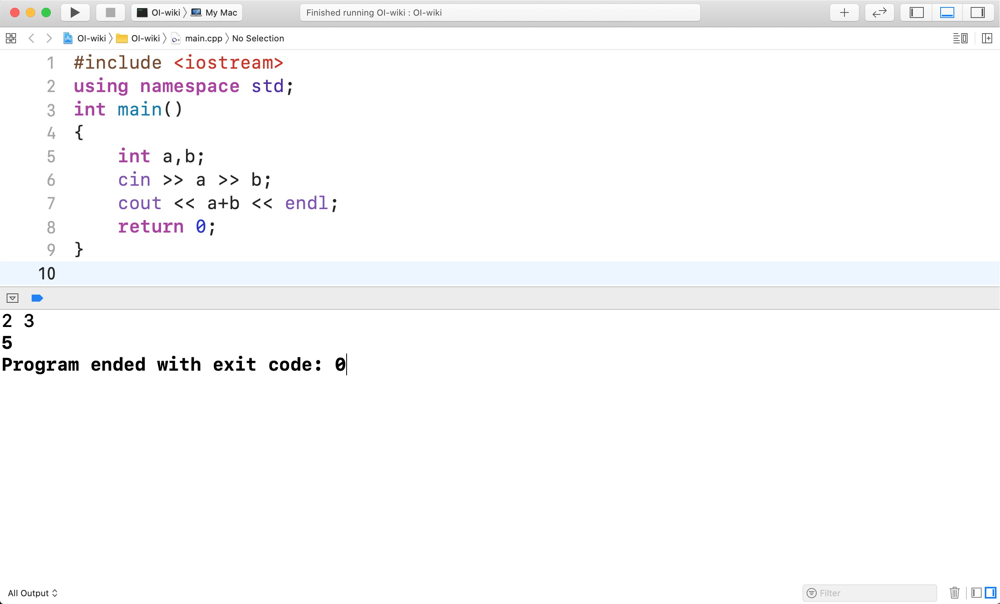
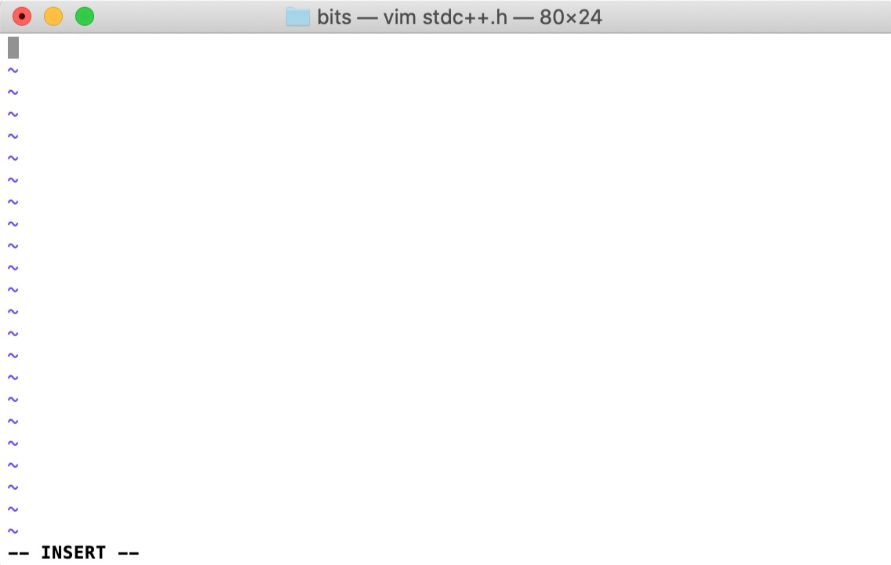
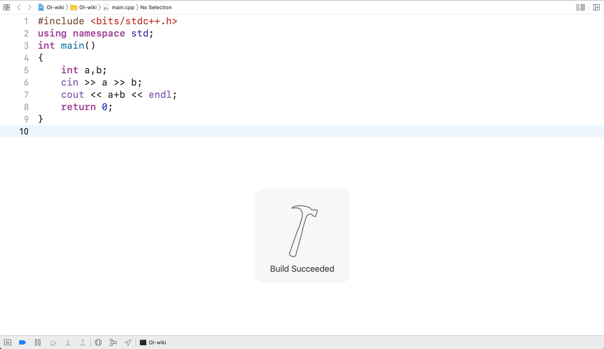

Xcode
简介
Xcode 是一个运行在 macOS 上的集成开发工具（IDE），由 Apple Inc. 开发。
安装
方法一
打开苹果电脑自带的 App Store（或者尝试 快捷链接）下载 Xcode。点击获取，然后输入苹果账号密码开始下载安装。
方法二
访问 苹果开发者下载页面，用苹果账号登录，然后找到 Xcode 最新的稳定版本安装包（即不含 Beta 的最新版本，此处为 11.6）：
点击弹出框内蓝色的文件名即可下载。得到压缩包之后，用系统自带的工具进行解压，然后得到文件 Xcode.app。把这个文件移动到【应用程序】文件夹后即可使用。
基础配置
首次打开 Xcode 时，可能会遇到下列弹出窗口：
这个窗口是 Xcode 元件的安装引导。点击 Install 并输入当前用户密码即可。
安装完毕后，界面左侧显示：
点击 Create a new Xcode project（创建一个新的 Xcode 项目），然后选择上方 macOS 中的 Command Line Tool（命令行工具），并点击右下角的 Next。

接下来，我们可以给项目命名，但最重要的是选择项目的语言。我们可以根据自己的需求，在最下方 Language 处选择 C 或者 C++：

项目的目录可以根据需要选择。创建完毕后，Xcode 会自动打开这个项目，并自动创建一个 main 文件（C 语言的后缀为 .c，C++ 语言的后缀为 .cpp）。
点击这个文件，就可以打开编辑区域：

编写代码后，可以按⌘B 编译（Build），⌘R 运行（Run）。运行后拖动，得到三个部分：

一般来说我们只使用【编辑区】和【运行区】。若程序有输入，那么在【运行区】中进行输入之后，就可以得到输出。界面呈现效果：

仿照这种方式，我们就可以运行任何的单个 C/C++ 程序。
万能头文件的使用
在编写代码过程中，我们可能会使用到很多头文件。常用的解决方法是使用万能头文件。
我们在源代码第一行引入万能头文件，然而编译过程中却提示：'bits/stdc++.h' file not found。即该头文件未找到。
这是因为在 macOS 上默认使用 libc++ 作为 C++ 标准库实现，而万能头 bits/stdc++.h 是 GNU libstdc++ 所独有的。
不过，我们可以手动编写一个万能头文件来使用。
步骤 1
打开终端（Terminal.app），前往 Xcode 存储头文件的文件夹，即：
cd /Applications/Xcode.app/Contents/Developer/Toolchains/XcodeDefault.xctoolchain/usr/include/c++/v1
如果 Xcode 版本大于等于 12.5，那么
cd /Applications/Xcode.app/Contents/Developer/Platforms/MacOSX.platform/Developer/SDKs/MacOSX.sdk/usr/include/c++/v1/
步骤 2
创建 bits 文件夹并进入：
用 vim 创建 stdc++.h 文件：
界面如下：
接着，我们需要通过 vim 编辑文件。敲击 i（insert）键盘即可进入插入/编辑模式（下方出现 -- INSERT --）：

将下面这段代码块复制并粘贴到终端中：
万能头文件代码块
// C++ includes used for precompiling -*- C++ -*-
// Copyright (C) 2003-2020 Free Software Foundation, Inc.
//
// This file is part of the GNU ISO C++ Library. This library is free
// software; you can redistribute it and/or modify it under the
// terms of the GNU General Public License as published by the
// Free Software Foundation; either version 3, or (at your option)
// any later version.
// This library is distributed in the hope that it will be useful,
// but WITHOUT ANY WARRANTY; without even the implied warranty of
// MERCHANTABILITY or FITNESS FOR A PARTICULAR PURPOSE. See the
// GNU General Public License for more details.
// Under Section 7 of GPL version 3, you are granted additional
// permissions described in the GCC Runtime Library Exception, version
// 3.1, as published by the Free Software Foundation.
// You should have received a copy of the GNU General Public License and
// a copy of the GCC Runtime Library Exception along with this program;
// see the files COPYING3 and COPYING.RUNTIME respectively. If not, see
// <http://www.gnu.org/licenses/>.
/** @file stdc++.h
* This is an implementation file for a precompiled header.
*/
// 17.4.1.2 Headers
// C
#ifndef _GLIBCXX_NO_ASSERT
#include <cassert>
#endif
#include <cctype>
#include <cerrno>
#include <cfloat>
#include <ciso646>
#include <climits>
#include <clocale>
#include <cmath>
#include <csetjmp>
#include <csignal>
#include <cstdarg>
#include <cstddef>
#include <cstdio>
#include <cstdlib>
#include <cstring>
#include <ctime>
#include <cwchar>
#include <cwctype>
#if __cplusplus >= 201103L
#include <ccomplex>
#include <cfenv>
#include <cinttypes>
#include <cstdbool>
#include <cstdint>
#include <ctgmath>
/* https://stackoverflow.com/a/25892335/15125422 */
#if defined(__GLIBCXX__) || defined(__GLIBCPP__)
#include <cstdalign>
#include <cuchar>
#endif
#endif
// C++
#include <algorithm>
#include <bitset>
#include <complex>
#include <deque>
#include <exception>
#include <fstream>
#include <functional>
#include <iomanip>
#include <ios>
#include <iosfwd>
#include <iostream>
#include <istream>
#include <iterator>
#include <limits>
#include <list>
#include <locale>
#include <map>
#include <memory>
#include <new>
#include <numeric>
#include <ostream>
#include <queue>
#include <set>
#include <sstream>
#include <stack>
#include <stdexcept>
#include <streambuf>
#include <string>
#include <typeinfo>
#include <utility>
#include <valarray>
#include <vector>
#if __cplusplus >= 201103L
#include <array>
#include <atomic>
#include <chrono>
#include <codecvt>
#include <condition_variable>
#include <forward_list>
#include <future>
#include <initializer_list>
#include <mutex>
#include <random>
#include <ratio>
#include <regex>
#include <scoped_allocator>
#include <system_error>
#include <thread>
#include <tuple>
#include <type_traits>
#include <typeindex>
#include <unordered_map>
#include <unordered_set>
#endif
#if __cplusplus >= 201402L
#include <shared_mutex>
#endif
#if __cplusplus >= 201703L
#include <any>
#include <charconv>
// #include <execution>
#include <filesystem>
#include <memory_resource>
#include <optional>
#include <string_view>
#include <variant>
#endif
#if __cplusplus > 201703L
#include <bit>
#include <compare>
#include <concepts>
#include <numbers>
#include <ranges>
#include <span>
#include <stop_token>
// #include <syncstream>
#include <version>
#endif
该文件来源于 10.2.0 版本的 libstdc++ 并经少许修改以兼容 libc++。
按键盘左上角的Esc退出编辑模式，然后直接输入 :wq 并换行即可保存文件。
步骤 3
关闭终端，回到 Xcode。重新按下 ⌘B/⌘R 进行编译，发现编译成功：

优缺点
优点：由苹果开发，适合 Mac 用户，界面齐全、美观。
缺点：Xcode 主要用来苹果程序的开发，对于竞赛来说功能冗余，安装包大小较大，而且仅能在 Mac 端上使用。
创建日期: 2020年8月1日